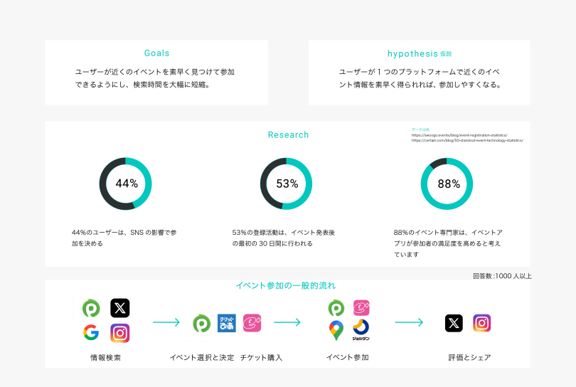
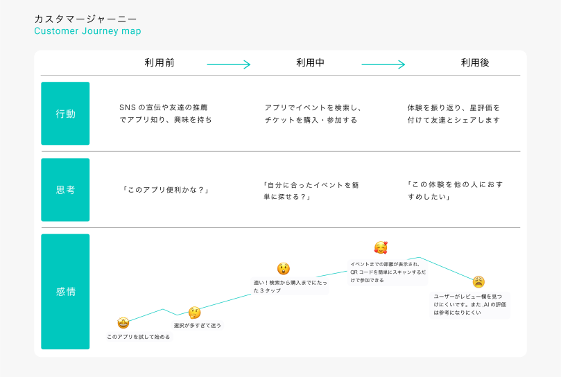
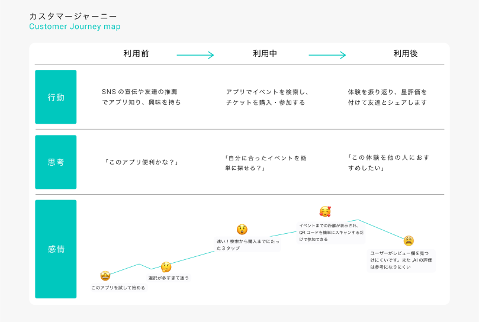
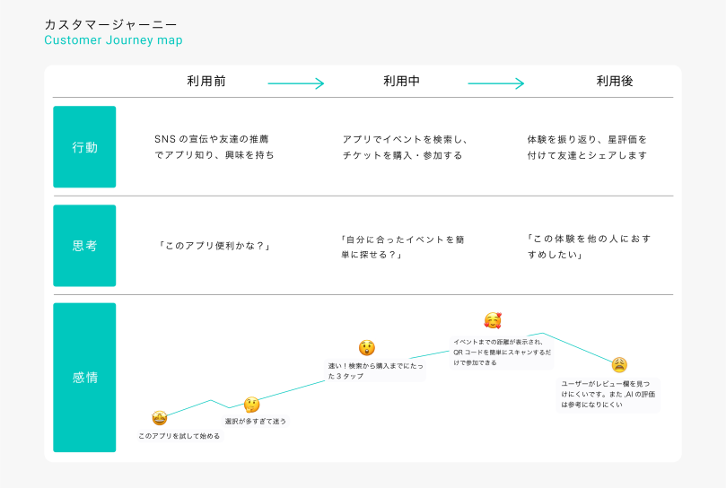
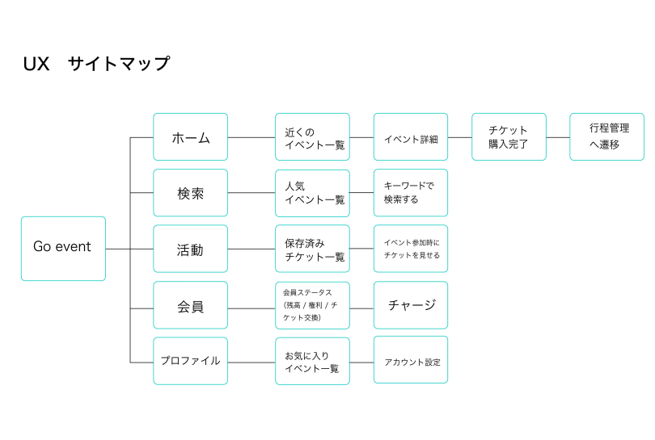
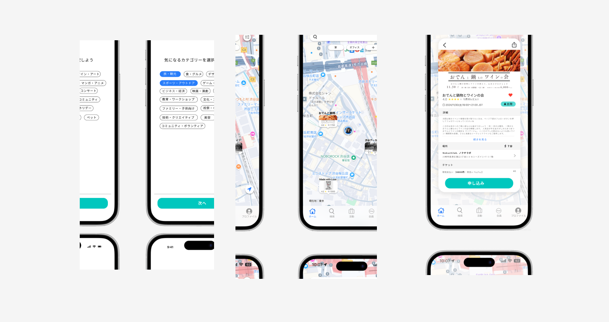
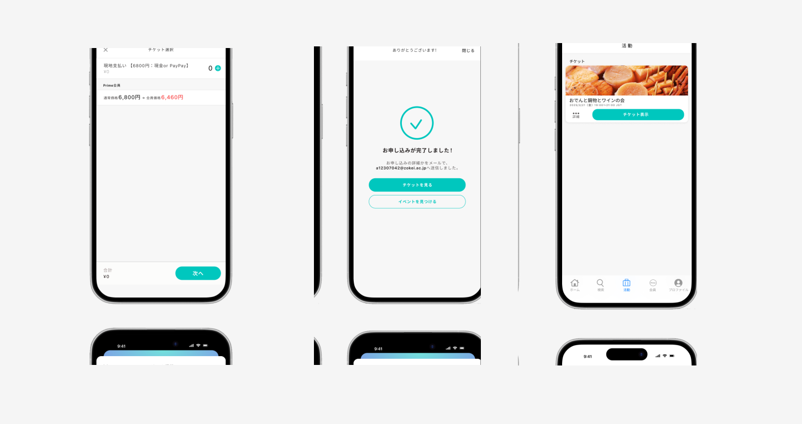
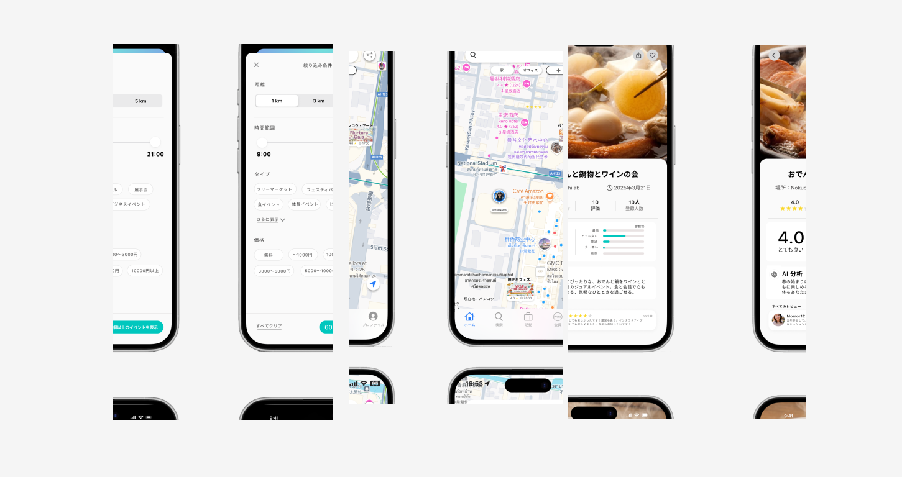
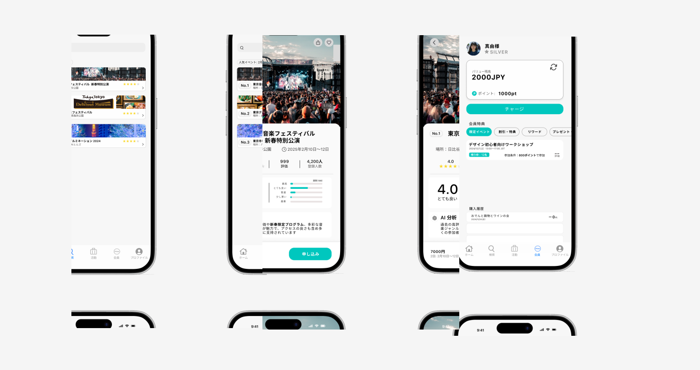

Go Event
周辺イベントを簡単に見つけすぐ参加
できるアプリ
アプリを開くだけで、近くのイベントを手軽にチェック。気
になる
イベントがあれば、その場でチケットを購入すぐ参加
課題：個人ワーク 期間：2ヶ月 時期：大学2年後期
Project Challenge
ユユーザーの動線設計だった。少ないステップで自然に操作できるよう、初期に複数のプロトタイプを作り、友人のフィードバックをもとに改善を繰り返した。情報の優先度と視線の流れを整理し、直感的で使いやすいUIに仕上げた。
Project Goals
ユーザーが近くのイベントを素早く見つけて参加できるようにし、検索にかかる時間を大幅に短縮することを目指しました。
Design Tools
Figma, Adobe CC
Research
まずオンラインでデータリサーチを行い、その後ユーザーインタビューを実施して課 題を発見。次にペルソナを設定し、カスタマージャーニーマップを作成してユーザーの行動やニーズを明確化。


 


Design Interaction
UXサイトマップを作成し、ユーザーの画面遷移を明確化。Version01では機能の抜けやフォント数の多さが課題となり、インターフェースの使いやすさと視覚表現を高めるため、反復とフィードバックで洗練した



User Flow


User Experience


Final Design

Projects